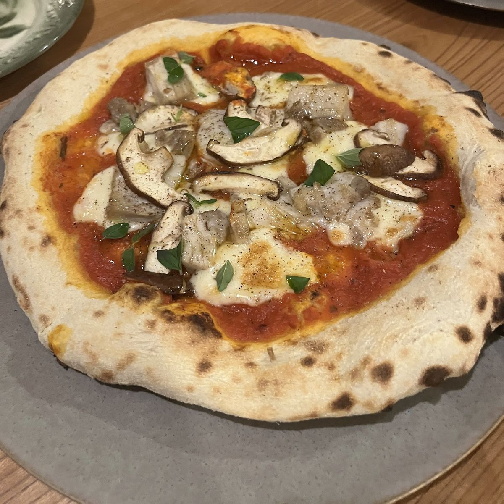

Plate 01
黒い麺の一皿
口コミには、イクラとズワイ蟹を合わせたパスタの声があります。麺にはイカ墨と卵が練り込まれていたとのこと。手打ちだったという声もあります。価格は、下の「口コミにあった価格・品」をご覧ください。Googleマップのクチコミより
口コミの内容と、この写真の一皿が同じものかどうかは分かりません。
Plates
Googleマップに投稿された写真と口コミから、ひと皿ずつ並べました。お店の公式のメニュー表ではありません。写真と口コミ、記事で紹介された料理の例、ドリンクは、別々のブロックに分けています。
Photos
Plate 01
口コミには、イクラとズワイ蟹を合わせたパスタの声があります。麺にはイカ墨と卵が練り込まれていたとのこと。手打ちだったという声もあります。価格は、下の「口コミにあった価格・品」をご覧ください。Googleマップのクチコミより
口コミの内容と、この写真の一皿が同じものかどうかは分かりません。

Plate 02
縦長の写真には、ベーコンと目玉焼きのような物がのったトーストと、葉野菜が写っています。

Plate 03
ピンク色の薄切りとクリーム状の物がのったトーストと、葉野菜が写っています。
この2枚は、品名や材料が分かりません。写真から見て取れることだけを書いています。

Plate 04
写真の一皿は、トマト色のソースとチーズ、薄切りのきのこのような物、緑の葉がのった、ピザのような丸い皿です。
口コミには、パスタやデザートとあわせてピザをいただいた、という声があります。種類や価格は分かりません。Googleマップのクチコミより
以下は、Googleマップのクチコミに書かれていた内容です。お店が公式に案内しているものではありません。現在のメニュー・価格は、お店にご確認ください。
From the article
掲載記事で名前が挙がった料理です。今日のメニューではありません。価格は記事に載っていないため、掲載していません。
Drinks
2025年夏のメニューに載っていたドリンクです。現在の内容は、変わっている場合があります。
| 品名 | 価格 |
|---|---|
| コーヒーSUZUKI COFFEEの豆(エチオピア シダモ フレンチ)使用 | |
| カフェ ロング | 450円 |
| カフェ エスプレッソ | 450円 |
| ダブル エスプレッソ | 600円 |
| カフェ ラテはちみつプラス +50円 | 500円 |
| アイスコーヒー | 500円 |
| アイスラテ | 550円 |
| スパークリングコーヒー | 600円 |
| ティー | |
| 紅茶(アールグレイ)MARIAGE FRERESのフレンチブルー使用 | 700円 |
| ルイボスティーKUSUMI TEAのルイボスバニラ使用・ノンカフェイン | 700円 |
| ハイビスカスティーホット・アイス、ノンカフェイン | 650円 |
| その他 | |
| 100%オレンジジュース | 500円 |
| 100%グレープフルーツジュース(ピンク) | 500円 |
| ウーロン茶 | 500円 |
環境への配慮のため、ストローは付けていません。必要な方はお申し出ください。2025年夏のメニューより

— 03 / 04 —
次のページ: p.04 アクセス →